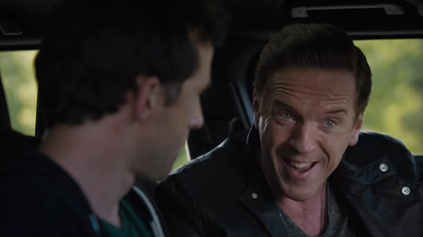

01
凌晨 Greenwich / 阿克斯车内
他再次被别人的失控叫醒

剧情事实Mick Danzig 酒后持枪朝吃植物的鹿射击，警察来到住所。阿克斯凌晨接到电话，与 Hall 到场把他接走。车里 Mick 说自己盈利时没有感觉，亏损才有刺激；阿克斯要求他别再让外界仇视公司，也别给执法者找到进入的缝隙。[1][2][3]
这一场为什么重要 · 个人解读
救人展示了阿克斯的资源，也展示这些资源不断需要被动使用。Mick 的空虚并不因账户转正结束，老板的训诫也没有解决它。把这场放在假期之前，让后来的“我想自由”不只像富豪抱怨忙碌：他组织起来的王国正在不断以人的问题把他叫回去。
因此 → 他有能力处理眼前事件，却仍要承担系统继续运转的负担。